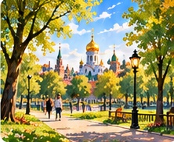

утро
utro
早晨

день
den'
白天／一天
вечер
vecher
晚上
ночь
noch'
夜晚
Я встаю.
Ya vstayu.
我起床。
Я завтракаю.
Ya zavtrakayu.
我吃早餐。
Я учу русский язык.
Ya uchu russkiy yazyk.
我学俄语。
Я гуляю.
Ya gulyayu.
我散步。
对话练习 · Диалог «Мой день»

Светлана
Что ты делаешь утром?
Chto ty delayesh' utrom?
你早上做什么？

Дмитрий
Утром я встаю и завтракаю.
Utrom ya vstayu i zavtrakayu.
早上我起床，然后吃早餐。
Светлана
А что ты делаешь вечером?
A chto ty delayesh' vecherom?
那你晚上做什么？
Дмитрий
Вечером я учу русский язык и гуляю.
Vecherom ya uchu russkiy yazyk i gulyayu.
晚上我学俄语，还会散步。
每天都用的词 · 日常词汇
8 个新词 · 听、读、说
🥐
завтрак
zavtrak
早餐
🍲
обед
obed
午餐
🍽️
ужин
uzhin
晚餐
💼
работа
rabota
工作
📚
учёба
uchyoba
学习
🛋️
отдых
otdykh
休息
🏠
домой
domoy
回家（方向）
➡️
потом
potom
然后／之后
从早到晚 · 实用句子
9 个新句子 · 从早晨起床到晚上睡觉
🌅Я встаю в восемь утра.
Ya vstayu v vosem' utra.
我早上八点起床。
🪥Я чищу зубы.
Ya chishchu zuby.
我刷牙。
🚿Я принимаю душ.
Ya prinimayu dush.
我洗澡。
💼Я иду на работу.
Ya idu na rabotu.
我去上班。
🥣Я обедаю в двенадцать.
Ya obedayu v dvenadtsat'.
我十二点吃午饭。
🏠Я возвращаюсь домой в пять вечера.
Ya vozvrashchayus' domoy v pyat' vechera.
我下午五点回家。
🍲Я ужинаю в шесть вечера.
Ya uzhinayu v shest' vechera.
我晚上六点吃晚饭。
🚶Потом я гуляю.
Potom ya gulyayu.
然后我散步。
🌙Я ложусь спать в одиннадцать вечера.
Ya lozhus' spat' v odinnadtsat' vechera.
我晚上十一点上床睡觉。
📝 语法小知识：«утро» 表示“早晨”，«утром» 表示“在早晨”；«вечер» 表示“晚上”，«вечером» 表示“在晚上”。例如：
Утром я встаю. = 我早上起床。
时间表达：в восемь утра = 早上八点；в шесть вечера = 晚上六点。
情景对话二 · 我的作息时间
Дмитрий
Во сколько ты встаёшь?
Vo skol'ko ty vstayosh'?
你几点起床？
Светлана
Я встаю в восемь утра.
Ya vstayu v vosem' utra.
我早上八点起床。
Дмитрий
Что ты делаешь вечером?
Chto ty delayesh' vecherom?
你晚上做什么？
Светлана
Я учу русский язык.
Ya uchu russkiy yazyk.
我学俄语。
Дмитрий
А потом?
A potom?
然后呢？
Светлана
Потом я гуляю.
Potom ya gulyayu.
然后我散步。
开口练习 · 说说你的一天
① 用俄语说：“我早上八点起床。” 提示：Я встаю в восемь утра.
② 选择一个动作，替换成你的真实生活，例如：Я иду на работу.
③ 用 «Потом…» 连接下一件事。例如：Потом я гуляю.
④ 点击句子下方的“跟读”按钮练习；语音识别只核对文字，不能准确检测俄语重音。
🌅 从早到晚 · 我的完整一天
看懂生活动词，掌握时间表达，然后自己说出一天的安排。点击右侧 🔊 听已有的俄语真人录音。
① 基础动词 · 我做什么？
Я завтракаю.
我吃早餐（завтракаю = 我吃早餐）
Я обедаю.
我吃午饭（обедаю = 我吃午饭）
Я ужинаю.
我吃晚饭（ужинаю = 我吃晚饭）
Я ложусь спать.
我上床睡觉（ложусь спать = 我去睡觉）
💡 Я + 动词 常用来介绍自己的动作：Я встаю. / Я завтракаю. 这里先学习“我”的常用形式，不必一次记住全部动词变位。
② 我的作息 · 6 个步骤
1
🌄 Я встаю в восемь утра.
我早上八点起床。
4
🍽 Я обедаю в двенадцать.
我十二点吃午饭。
5
🏠 Я возвращаюсь домой в пять вечера.
我下午五点回家。
6
🌙 Я ложусь спать в одиннадцать вечера.
我晚上十一点睡觉。
🕒 утро = 早晨，утром = 在早上；вечер = 晚上，вечером = 在晚上。说具体时间时可用 в восемь утра（早上八点）、в шесть вечера（晚上六点）。Потом… = 然后……
③ 互动挑战 · 给一天的活动排序
按照上面 6 个步骤的顺序，依次点击下方短句。点已选短句可撤销。
将句子排成正确顺序。
④ 轮到你开口说 · 小目标
🎤 从上面的句子选至少 4 句，按自己的真实生活替换时间。例如先说 Я встаю в восемь утра.，再用 Потом я завтракаю. 表示“然后我吃早餐”。先听示范，再朗读；自动语音识别不能准确判断重音。
准备好了吗？
复习本课内容，做个小测验吧！
第7课 · 小测验
每题只有一个正确答案。听题目，选择答案，再看解释。
拉丁字母是俄语转写，不是汉语拼音。先听录音，再跟读。